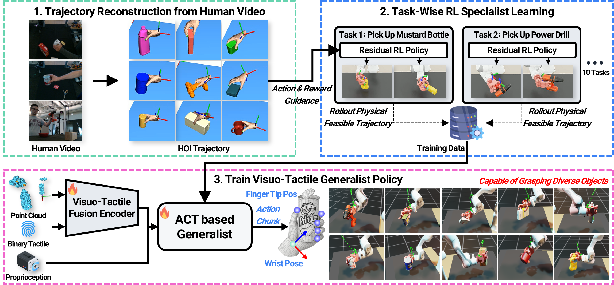

Overview

Our pipeline reconstructs HOI trajectories from human videos, trains per-object Residual RL specialists to produce physically feasible robot motions, then distills 10,000 successful rollouts into a single multi-task Visuo-Tactile Generalist policy.
Visuo-Tactile Observation

Each point in the 512-point cloud carries a one-hot label: (1,0,0) camera points, (0,1,0) non-contacting fingertips, (0,0,1) contacting fingertips. This is combined with a 42-D proprioceptive state and a 4-D binary contact signal, enabling the policy to jointly reason over scene geometry and local contact events.
Visuo-Tactile Generalist Policy Architecture

Built on ACT with a CVAE encoder, the policy Transformer takes four tokens — point cloud (PointNet++), proprioception, binary contact, and a style latent — and predicts a 30-step action chunk of wrist pose and fingertip targets, executed via DLS arm IK and analytical hand IK.